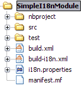

Apache NetBeans
Apache NetBeansTranslate Your NetBeans Module
Note: These pages are being reviewed.
ABBREVIATIONS USED:
-
i18n = internationalization
-
l10n = localization
-
t9n = translation
Why translate my module?
Software that is translated or in the native language is more user-friendly than when it is in a foreign language. It is really good if we can have applications translated for all users. More and more users will prefer our applications instead of a foreign language version. This is the same for NetBeans modules. When you have an internationalized (i18n) or localized (l10n) module, more users will consider using your module. Think about that!!
BTW, nobody is fluent in all languages, so, we will need a way to make i18n easy to maintain and redistribute for people that can help with our translations, such as friends and contributors in other countries. This is one of the great things about open-source; you can get help from contributors to test and translate your open-source project. And, it can also help a translation vendor who might work on your commercial project too. In any case, we will need an infrastructure to make this workflow easy for developers and translators.
How can I translate my module? What is the easiest way to do this and which tools should I use?
We will provide the steps to promote translation of NetBeans modules. For this approach, we will use OmegaT tool. The following steps will describe how you can configure your environment to make localization easier to maintain and redistribute to other translators.
Creating a NetBeans Module project
Just create a simple module project, named 'SimpleI18nModule'. For details about NetBeans module development, see:
Creating an i18n infrastructure
Once your project is created, you will need to copy the i18n help files. These files are created to help develpers make i18n easier. The new files are:
-
build-i18n_TranslateNetbeansModule.xml -
Include the target to make NetBeans create the build and NBM files with i18n files.
-
i18n_TranslateNetbeansModule.properties -
Include per-project specific properties, as paths, to make
build-i18n_TranslateNetbeansModule.xmluseful. See the file comments to details about each property.
You must also change the build.xml file too. Import build-i18n_TranslateNetbeansModule.xml files instead of nbproject/build-impl.xml. The new build.xml file is something like this:
<?xml version="1.0" encoding="UTF-8"?>
<!-- You may freely edit this file. See harness/README in the NetBeans platform -->
<!-- for some information on what you could do (e.g. targets to override). -->
<!-- If you delete this file and reopen the project it will be recreated. -->
<project name="org.yourorghere.simplei18nmodule" default="netbeans" basedir=".">
<description>Builds, tests, and runs the project org.yourorghere.simplei18nmodule.</description>
<!--import file="nbproject/build-impl.xml"/-->
<import file="build-i18n_TranslateNetbeansModule.xml"/>
</project>The structure of your project is now something like this:

Now, the infrastructure for your project is done. You can develop your module as you wish and, when it is time for translation, the new targets from build-i18n_TranslateNetbeansModule.xml will be required.
Translating the new module
To do the translation, previously stated, you will need the OmegaT Translation Editor. For example, we will use version 1.6.1. You can get started on OmegaT in How to translate NetBeans IDE using OmegaT. Before creating new OmegaT project(s), you will use the following structure in your module folder:
The two highlighted folders are designed for i18n operations. omegat folder is designed to maintain the original OmegaT projects. For example, you will need a project for each language you will translate your module into. So, the suggestion is to create a default module, with the English to English language (or <native> to <native> language, assuming that module is created in <native> by default) to make the bases for the specific-language translation modules.
The translatedfiles folder will contain the translated files from the OmegaT project; in other words, all javahelp and src translated files (target files). The omegat and translatedfiles folder can be renamed to any other name, so you just need to update i18n.basedir and translatedfiles.basedir properties in the i18n_TranslateNetbeansModule.properties file. It is not necessary create these folders manually. There is a helper target on build-i18n_TranslateNetbeansModule.xml named i18n-setup-project, which creates all necessary folders, based on your i18n_TranslateNetbeansModule.properties file.
After creating your folder structure, create a new OnegaT project on the omegat folder, that will be the translation base project for all languages. Follow the How to translate NetBeans IDE using OmegaT tutorial to learn about creating your project.
{{warning|
If you are using JavaHelp on your module, you will need an additional change to your OmegaT settings.
Add a new pattern on your File Filters > Text Files:
Source Filename Pattern: *toc.xml
Source File Encoding: <auto>
Target File Encoding: UTF-8
Target Filename Pattern: ${nameOnly}_${targetLocale}.${extension}}}
Now, OmegaT will request you to import source files. Just cancel this operation. Now, run the i18n-update-omegat-source on the build-i18n_TranslateNetbeansModule.xml build file. If your i18n.default.name property is correctly defined, your OmegaT project sources will be updated. Now, just copy your default project, and create a new project, e.g omegat-pt_BR (for Brazilian Portuguese translations) or omegat-ja for Japanese, and open it on OmegaT, configure its properties, as target language and so on.
When you finish the translation, just have OmegaT generate your target files and NetBeans rebuild your project. Then run your project to see the results.
Contact and support
If you have any problem or need help to translate into any other language, please contact dev@translatedfiles.netbeans.org. If you wish help maintaining the NetBeans IDE and modules in your language, visit us at http://translatedfiles.netbeans.org/.